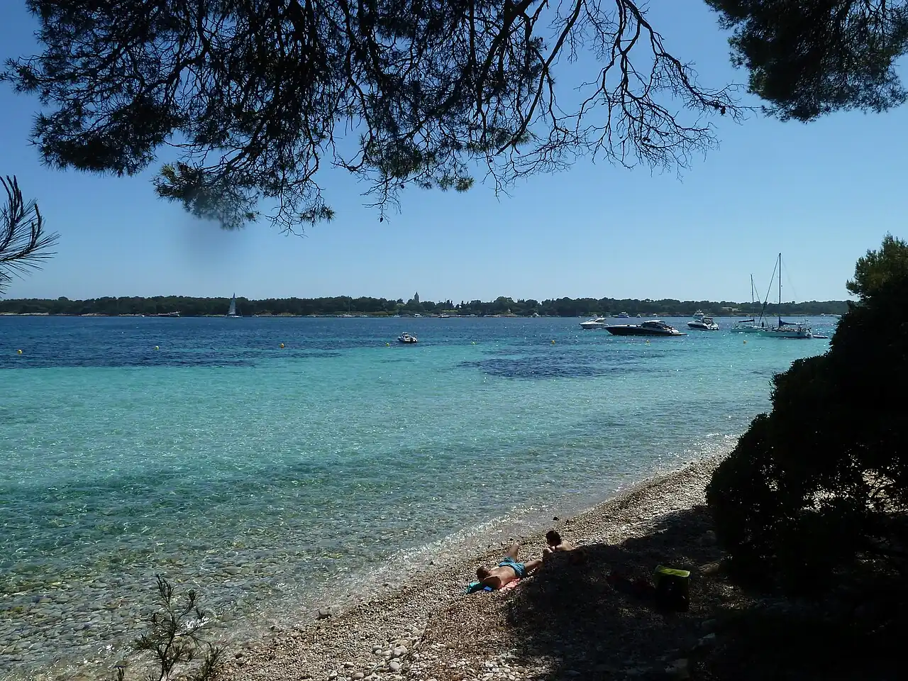

Île Sainte-Marguerite — Lérins
Cannes, Alpes-Maritimes, France · snorkeling, baignade, kayak, plongée

La plus grande des îles de Lérins, à un quart d’heure de bateau de Cannes, couverte de pins et d’eucalyptus. Ses criques rocheuses et ses herbiers de posidonie se prêtent au snorkeling, et un écomusée sous-marin de sculptures se visite à faible profondeur.
- Lieu
- Cannes, Alpes-Maritimes, France
- Niveau
- Débutant
- Activités
- snorkeling, baignade, kayak, plongée
- Type d'eau
- Mer / océan
- Coordonnées
- 43.52, 7.05 (position approximative du secteur)
Dangers à connaître
- Très nombreux bateaux au mouillage entre les deux îles en été.
- Herbiers de posidonie protégés : ne t’y accroche pas, pas d’ancre dessus.
Le conseil d'Ocean Buddy
Prends une navette tôt depuis le port de Cannes et fais le tour de l’île à pied pour choisir une crique abritée du vent.
Ouvrir dans Ocean Buddy Télécharger sur l'App Store
Source : Fiche Ocean Buddy · septembre 2026 · à vérifier localement.